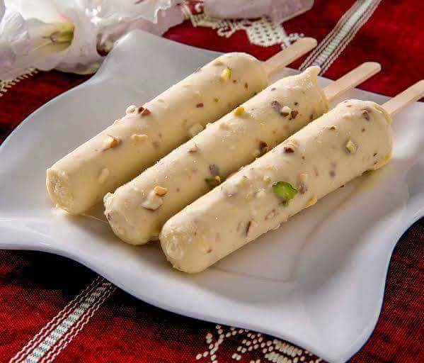

Kulfi

What is Kulfi
Kulfi is a popular frozen dessert from the Indian subcontinent. It is made by thickening and reducing milk, then flavored with various ingredients like saffron, cardamom, or nuts.
The mixture is poured into molds and frozen, resulting in a creamy and rich treat loved for its unique texture and delightful taste.
Kulfi is a delightful indulgence enjoyed by people of all ages.
Ingredients
- 1 ¼ cups evaporated milk
- 1 ¼ cups sweetened condensed milk
- 1 (16 ounce) container frozen whipped topping, thawed
- 4 slices white bread, torn into pieces
- ½ teaspoon ground cardamom
Steps
- Combine evaporated milk, condensed milk and whipped topping in a blender and blend in pieces of bread until smooth.
- Pour mixture into a 9x13 inch baking dish or two plastic ice cube trays, sprinkle with cardamom and freeze for 8 hours or overnight.
:max_bytes(150000):strip_icc():format(webp)/736349-kulfi-Leisha-1x1-1-27872b0a38bc4766bdb3217d3a7f214f.jpg)
- Enjoy!